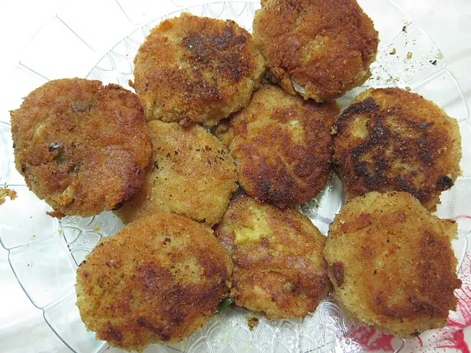

Фото: കാക്കര, CC BY-SA 3.0

Рыбные котлеты
Сочные котлеты из минтая или хека с луком и хлебом
45 мин4 порц.328 ккал на порциюБ 32 · Ж 14 · У 18Русская кухня
Продукты на 4 порц.
- Минтай700 г
- Лук репчатый1 шт
- Яйцо куриное1 шт
- Хлеб белый2 шт
- Молоко3 ст. л.
- Панировочные сухари4 ст. л.
- Растительное масло3 ст. л.
- Соль1 ч. л.
- Перец чёрный молотый1 щеп.
- Укроп по желанию0,5 пучка
Как готовить
- Хлеб без корок замочите в молоке на 5 минут и отожмите.
- Филе рыбы и лук пропустите через мясорубку или измельчите блендером.
- Смешайте фарш, хлеб, яйцо, рубленый укроп, соль и перец. Уберите в холодильник на 15 минут, так фарш станет плотнее.
- Мокрыми руками слепите 10-12 котлет и обваляйте в сухарях.
- Жарьте на масле на среднем огне по 4 минуты с каждой стороны до золотистой корочки.
- Накройте крышкой и подержите на слабом огне 5 минут. Котлета готова, когда на разрезе белая и упругая.
Совет. Если фарш жидкий, добавьте ложку сухарей, а не муки. Кусочек сала или сливочного масла в фарше делает котлеты из сухой рыбы сочнее.